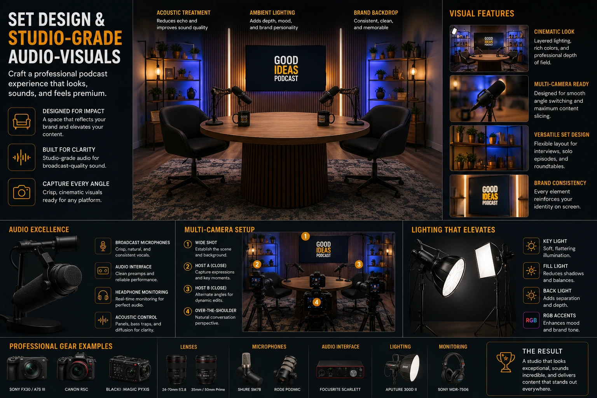
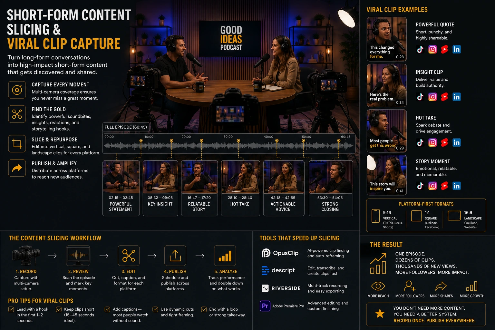

The Multi-Camera Podcast Set: Engineering a Visual Studio Environment for Maximum Content Slicing
The Podcast Is No Longer Just Audio
The business podcast that is recorded in a spare room with a USB microphone and uploaded to Spotify as an audio file is not a content strategy — it is a content island. It exists in a single format, on a single platform, discoverable only by the audience that already knows to look for it, and invisible to the algorithmic distribution systems on every platform where the audience the podcast is trying to reach actually spends its time.
The shift that has redefined video podcast production services over the past three years is not a shift in what podcasts talk about — it is a shift in what a podcast recording session is understood to produce. A 60-minute conversation between two credible people, captured with a professional multi-camera studio setup and processed through a systematic short-form video content slicing workflow, does not produce one podcast episode. It produces a full-length video for YouTube, an audio file for every podcast platform, eight to fifteen short-form vertical clips for Instagram Reels and YouTube Shorts, a series of LinkedIn video posts, a set of audiogram graphics, and a library of captioned quote cards — all from a single recording session.
The infrastructure that makes this possible is the multi-camera studio setup — a purpose-engineered visual environment designed not just to record a conversation but to generate maximum usable content across every platform from a single production investment. This guide explains how that environment is built, how it is operated, and how it is optimised specifically for capturing viral podcast clips and dynamic switching video editing in post-production.
Why Multi-Camera Is a Content Strategy Decision, Not Just a Production Decision
The case for a multi-camera studio setup in business podcast production is not primarily visual — it is strategic. The number of usable pieces of content that can be produced from a single recording session is directly and mathematically constrained by the number of camera angles captured during that session. A single-camera podcast produces a single visual perspective: every cut in the edit returns to the same shot, and every short-form clip extracted from the recording looks identical to every other.
A multi-camera studio setup breaks this constraint. With a wide shot, two individual close-ups, and a reaction angle all recording simultaneously, the editor working on short-form video content slicing has four independent video streams to draw from for every moment of the conversation. A clip that begins on the wide shot, cuts to a close-up as the speaker makes their key point, and cuts to the reaction shot as the co-host responds — all from the same 45-second moment in the recording — is a fundamentally more engaging piece of content than the same 45 seconds delivered from a static single-camera perspective.
The strategic implications of multi-camera production for business content:
- More clips per session. Because each participant has a dedicated close-up camera, moments featuring a single speaker can be extracted as clean, visually dynamic individual clips — without the wide-shot framing that includes empty chairs and the full set. The close-up clip is the native format for Instagram Reels and YouTube Shorts; a production that captures dedicated close-ups produces clips that are platform-ready without reframing or cropping.
- Dynamic editing without visual fatigue. A 60-minute podcast edited from a single static camera angle creates visual fatigue for the viewer long before the content warrants switching off. The same 60 minutes edited from four camera angles, with cuts timed to the rhythm of the conversation, maintains visual engagement across the full duration — which directly affects watch time, completion rate, and algorithmic performance on YouTube.
- Reaction footage as independent content. The reaction shot — a camera dedicated to capturing the non-speaking participant's visible response to what is being said — is one of the most underutilised assets in podcast video production and one of the most effective tools for capturing viral podcast clips. A moment of genuine surprise, laughter, or visible disagreement captured on the reaction camera, cut alongside the speaker's claim, produces the kind of authentic human dynamic that performs significantly above average on social platforms.
- Format flexibility for platform-native delivery. Different platforms have different native aspect ratios: 16:9 for YouTube, 9:16 for Reels and Shorts, 1:1 for some LinkedIn formats. A multi-camera studio setup that captures dedicated close-up footage framed with vertical delivery in mind — tighter framing, subject centred in the frame — produces clips that can be delivered in 9:16 without cropping that removes critical visual information, which is the most common technical failure in single-camera podcast clip production.
Engineering the Multi-Camera Studio Setup: Camera Positions and Angles
The camera positions in a multi-camera studio setup for podcast production are not arbitrary — each camera serves a specific function in the content slicing workflow, and the positions are engineered to ensure that every camera delivers footage that is usable independently rather than only in combination with other angles.
The standard four-camera configuration for a two-host or host-and-guest high-end podcast video recording setup:
Camera One — The Wide Establishing Shot
Positioned directly facing the set at a distance that captures both participants and the full designed background environment. This is the visual anchor of the production — the shot that establishes the set, communicates the brand's visual identity, and provides the editor with a clean return point between close-up cuts. The wide shot is framed to be visually complete: both participants visible from roughly the chest up, the set background composed and brand-consistent, and the depth of field managed to separate the subjects from the background without losing the set's visual detail entirely. This camera runs throughout the full recording and forms the backbone of the long-form YouTube edit.
Camera Two and Three — Individual Close-Ups
One camera dedicated to each participant, positioned at a slight angle from the subject's eyeline — typically 15 to 20 degrees off-axis — at a focal length that produces a tight head-and-shoulders framing with the background present but softened. These are the primary cameras for short-form video content slicing: every clip extracted for vertical social delivery will be built primarily from this footage. The framing is deliberately tighter than a conventional interview shot — centred in the frame, with consistent headroom — so that the close-up footage works as a native vertical crop without any subject being pushed to the edge of the reframed image.
Camera Four — The Reaction and Over-Shoulder Angle
A camera positioned to capture the non-speaking participant's visible reaction to what is being said — either a direct reaction shot or an over-the-shoulder angle that includes the speaking participant in the foreground and the reacting participant in focus behind. This camera is the most valuable tool for capturing viral podcast clips because it captures authentic, unscripted human response — the raised eyebrow, the lean-forward, the involuntary laugh — that social algorithms reward and human viewers share. It also provides the editor with the angle needed for a clean two-shot that is distinct from the wide, creating visual variety in the long-form edit without requiring a camera move.
Visual Set Design for Businesses: The Background Is Not a Backdrop
The most consistently underinvested element of business podcast production is visual set design for businesses — the deliberate engineering of the environment that appears behind and around the participants in every shot. In a multi-camera studio setup, the set background is not a technical necessity to be resolved with a plain wall or a bookshelf — it is a brand communication surface that appears in every frame of every clip the production will ever distribute.
The set background is the first visual element a new viewer processes when they encounter a clip from the podcast in their social feed. Before they have heard a word, before they have registered the speakers' names, the set communicates the production's quality, the brand's seriousness, and the content's credibility. A set that communicates "professional, considered, high production value" extends trust to the content before the content has earned it. A set that communicates "improvised, low-budget, domestic" creates a credibility deficit that the content then has to overcome.
The design principles that govern effective visual set design for businesses in podcast production:
- Depth, not flatness. A set that has visual depth — objects at different distances from the camera, with a foreground element, a mid-ground subject, and a background that recedes — is more visually engaging and more cinematic than a flat wall behind the participants. Depth is created through set dressing: a surface in the foreground, a set piece at mid-distance, and a lit background plane. The depth of field management of the close-up cameras then renders the background in a controlled softness that keeps attention on the subject while the set's visual detail remains present and readable.
- Brand-consistent colour language. The set's colour palette should be drawn from the brand's visual identity system — not a literal reproduction of brand colours in every element, but a considered application of the brand's colour language to the set dressing, lighting gels, and background surfaces. A set that is visually coherent with the brand's other communications makes every clip instantly attributable to the brand at a glance — which is the condition for building a recognisable visual identity across a social content programme over time.
- Functional set dressing, not decorative clutter. Every object on the set should be there for a reason — to communicate something about the brand, to add visual depth, or to create a deliberate visual interest point. Random bookshelves, generic plants, and accumulated desk objects communicate domestic improvisation, not professional production. A set dressed with intent — branded items, curated objects relevant to the podcast's subject matter, lighting elements that are themselves part of the visual composition — communicates that the environment was designed, not discovered.
- Consistency across episodes and guests. The set must be reproducible exactly from episode to episode — the same camera positions, the same lighting setup, the same set dressing — so that every episode and every clip looks like it belongs to the same show. An audience that watches multiple clips from the same podcast should be able to identify the production by its visual environment before they register the hosts' faces. That level of visual consistency is a brand asset that compounds with every episode published.

Professional Studio-Grade Audio-Visuals: Why Audio Is Half the Visual Product
The paradox of professional studio-grade audio-visuals in podcast production is that audio quality has a more direct impact on the perception of visual production quality than almost any visual element other than lighting. A viewer watching a beautifully shot podcast clip with poor audio — background noise, room reverb, proximity distortion, or inconsistent levels between participants — does not conclude that the audio is poor and the video is good. They conclude that the production is poor, full stop. Audio failure immediately undermines every investment made in the visual environment.
The audio infrastructure of a production-ready high-end podcast video recording setup:
- Individual microphones on individual channels. Every participant records on their own dedicated microphone — a dynamic microphone for noisy or acoustically untreated environments, a large-diaphragm condenser for treated studio spaces — with each microphone feeding a separate channel on the audio interface or mixer. Separate channel recording is the single most important audio production decision in podcast video production: it allows each voice to be processed, EQ'd, and levelled independently in post-production, without any change to one participant's track affecting the others. It is also the condition for clean audio in short-form clips, where a single participant's voice needs to be isolated and optimised without the other participants' ambient presence degrading the clip's audio quality.
- Acoustic treatment of the recording environment. Hard surfaces — concrete walls, glass windows, tiled floors — reflect sound and create the room reverb that is the most common and most damaging audio problem in improvised podcast recording environments. Acoustic panels on the walls behind and beside the recording positions, combined with soft furnishings and carpet or rugs on the floor, reduce reflected sound to the level where the microphones capture primarily direct voice rather than a mixture of direct voice and reflected room tone. Acoustic treatment is a pre-recording infrastructure investment — it cannot be replicated in post-production.
- Real-time audio monitoring during recording. A recording engineer or producer monitoring the audio feeds through headphones during the recording session catches problems — a microphone that has shifted position, an unexpected ambient intrusion, a level imbalance between participants — at the moment they occur, when they can be corrected, rather than at the post-production stage, when they can only be managed. Live monitoring is the audio equivalent of the director watching the monitor during a video shoot: it is the quality control layer that prevents the post-production team from inheriting problems that should have been caught on the day.
- Synchronised audio and video recording. In a multi-camera studio setup where cameras are recording independently, a clapper or timecode synchronisation system ensures that all audio and video feeds are aligned to frame accuracy in the editing timeline. Misaligned audio — even by a few frames — creates a lip-sync problem that is immediately visible and completely distracting in close-up shots, which are the primary footage type in short-form clip production. Timecode synchronisation is a pre-recording technical setup step; it costs minutes on the day and prevents hours of frame-by-frame alignment work in post-production.
Dynamic Switching Video Editing: Building the Edit for Maximum Clip Output
Dynamic switching video editing is the post-production methodology that transforms raw multi-camera podcast footage into both a polished long-form episode and a library of platform-ready short-form clips — using the same editorial session, the same timeline, and the same decisions to produce both outputs simultaneously rather than as separate post-production processes.
The efficiency of dynamic switching video editing in a video podcast production services workflow is achieved through a structured editorial sequence that prioritises clip identification before full-episode assembly:
- The content audit before the edit begins. The editor — or a dedicated content producer — reviews the recording transcript or timestamp notes and flags every moment that has short-form clip potential before the editing timeline is opened. This audit identifies the six to fifteen moments in the recording that contain a complete, self-contained idea with the energy, clarity, and visual dynamic to perform as standalone clips. Identifying these moments before the edit begins means the edit can be structured to serve both outputs — the long-form episode and the clip library — from the same pass through the material, rather than requiring a separate clip extraction pass after the full episode edit is complete.
- Camera switching timed to conversation dynamics. In multi-camera podcast editing, the cut is not a visual decision alone — it is a conversational one. The cut to a close-up lands on the speaker at the moment their point reaches its peak; the cut to the reaction angle lands on the listener at the moment their response is most visible; the cut back to the wide lands at a natural breath point that gives the viewer a compositional reset before the next exchange begins. Dynamic switching video editing that is timed to the conversation's own rhythm produces an edit that feels invisible — the viewer experiences the conversation, not the editing.
- Short-form clip extraction from the multi-camera timeline. Once the long-form episode edit is complete, every flagged clip moment exists in the timeline as an already-edited sequence of camera cuts — which is the majority of the work needed to produce the standalone short-form clip. The editor extracts the relevant section, trims the top and tail to the tightest version of the idea, adjusts the framing for vertical delivery if required, and adds captions. A clip that would take 45 minutes to produce from raw footage as a standalone project takes 10 to 15 minutes to produce from an already-edited multi-camera timeline.
- Caption production as a production-line step. Captions are not optional in short-form video distribution — a significant proportion of social video is watched in environments where audio is off, and uncaptioned clips lose this audience entirely. A captioning workflow built into the post-production pipeline — using automated transcription as a first pass, reviewed and corrected for accuracy, styled to the brand's caption design system — produces captions for every clip without requiring manual transcription from scratch for each piece.
Capturing Viral Podcast Clips: The Production Decisions That Determine Performance
Capturing viral podcast clips is not primarily a post-production discipline — it is a production discipline. The clips that outperform on social platforms share characteristics that are partially determined by what was said during the recording and substantially determined by how the recording environment, camera setup, and interview dynamic were engineered to capture those characteristics.
The production decisions that most directly improve the performance of short-form clips extracted from a podcast recording:
- The reaction camera running from the first minute. The most frequently viral podcast clip format is the reaction shot — a close-up of the non-speaking participant's face at the moment of a surprising, provocative, or emotionally resonant statement. This footage is only available if the reaction camera was running and correctly framed at the moment the statement was made. A production workflow that ensures all cameras are rolling before the conversation begins and remain rolling throughout — including during off-the-record moments at the beginning and end of the session, which frequently produce the most authentic and usable reaction footage — captures the material that a production that only rolls cameras for the "official" recording misses.
- Close-up framing designed for vertical delivery. The close-up camera positions in a multi-camera studio setup built for short-form video content slicing are framed differently from conventional television interview close-ups. A television close-up leaves generous headroom and places the subject's eyes at the upper third of the 16:9 frame. A close-up framed for vertical clip extraction places the subject's eyes at the upper third of the 9:16 frame within the 16:9 capture — meaning the subject is framed tighter and more centrally, so that the vertical crop produces a clean, professional result without the subject's face being pushed to the bottom of the reframed image.
- Lighting consistency across the full session. Short-form clips are extracted from moments distributed across a 60-minute recording — which may span three or four hours of calendar time including breaks, guest changeovers, and segment resets. A lighting setup that drifts during this period — due to natural light changes through windows, practical light variations, or equipment repositioning — produces clips from different points in the session that look visually inconsistent when published as a series. A fully controlled lighting environment that produces identical results from the first minute to the last ensures that the clip library is visually coherent regardless of which moments are extracted.
- The hook-first edit structure. Social platform algorithms surface content based on initial engagement signals — the proportion of viewers who watch past the first two to three seconds. Every short-form clip produced from the podcast recording should be edited to open with its strongest moment: the surprising claim, the bold statement, the visible reaction — not a contextual introduction that makes sense narratively but loses the audience before the interesting part arrives. The hook-first edit structure is a post-production decision, but it is only possible if the recording captured a strong enough opening moment to use — which is a function of both the conversation's content and the production's ability to capture authentic, unguarded moments across the full session.

The Content Output Map: What One Recording Session Produces
The full content output of a single 60-minute podcast episode recorded with a professional multi-camera studio setup and processed through a systematic short-form video content slicing workflow is not one piece of content — it is a content programme. Understanding the complete output map before the recording session is the planning discipline that ensures the production is built to capture everything the output map requires.
- The full-length video episode for YouTube. The complete 60-minute episode edited from the multi-camera timeline, published as the primary long-form asset on YouTube — with dynamic camera switching, clean audio, and a set that communicates production quality at full 16:9 resolution.
- The audio-only episode for podcast platforms. The same recording delivered as a clean audio file for Spotify, Apple Podcasts, and all other distribution platforms — a zero-additional-cost output from the same recording session that extends the episode's reach to audiences who consume podcasts exclusively in audio format.
- Eight to fifteen short-form vertical clips for Reels, Shorts, and LinkedIn. The highest-value moments from the recording, each trimmed to 45 to 90 seconds, reformatted to 9:16, captioned, and individually optimised for each platform's native content format — produced from the multi-camera timeline in a fraction of the time they would require as standalone productions.
- A YouTube Shorts series from the same clip library. The same short-form clips delivered in YouTube Shorts format, building a parallel short-form content library on the same platform as the full-length episode — where YouTube's algorithm surfaces Shorts to audiences who have not yet discovered the long-form channel.
- A captioned quote card series for static social posts. The most quotable statements from the episode transcript, designed as branded static image posts — a content format that requires only the transcript and the brand design template, extends the episode's social presence to audiences who engage with static content more readily than video, and can be published across a full week of social posting from a single recording session.
- An episode audiogram for audio-first social distribution. A 60 to 90-second animated audio visualisation of the episode's most compelling audio moment, designed for Twitter/X and Facebook where video content is native but vertical format is less dominant — extending the episode's reach to platforms not served by the vertical clip library.
Conclusion
The business that invests in a professional multi-camera studio setup for its podcast is not investing in a better-looking recording — it is investing in a content production infrastructure that multiplies the output of every hour spent recording. A 60-minute conversation captured on a single static camera produces one piece of content. The same 60-minute conversation captured with four cameras, in a designed visual environment with professional studio-grade audio-visuals, and processed through a systematic dynamic switching video editing and short-form video content slicing workflow, produces a full content programme — distributed across YouTube, Instagram, LinkedIn, Spotify, and every other platform where the audience lives.
Capturing viral podcast clips, building a recognisable visual brand through consistent visual set design for businesses, and engineering every aspect of the production for maximum content slicing efficiency are not advanced considerations for a podcast that has already found its audience — they are the production disciplines that determine whether a podcast finds its audience at all.
At The PhD Ads, we design and operate professional multi-camera studio setups for business podcast production across India — from set design and lighting to recording, dynamic switching video editing, and full short-form content slicing delivery — because we understand that the recording session is only the beginning of what a well-engineered podcast production can produce.
Key Topics
Ready to Turn Your Podcast Into a Full Content Engine?
At The PhD Ads, we build and operate professional multi-camera podcast studios for businesses across India — from set design and studio-grade audio-visuals through dynamic editing and short-form content slicing — so every recording session delivers a complete content programme across every platform.
Email: team@e2o.in